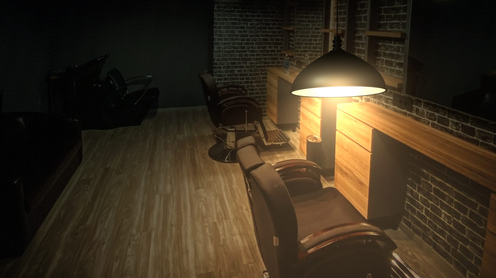
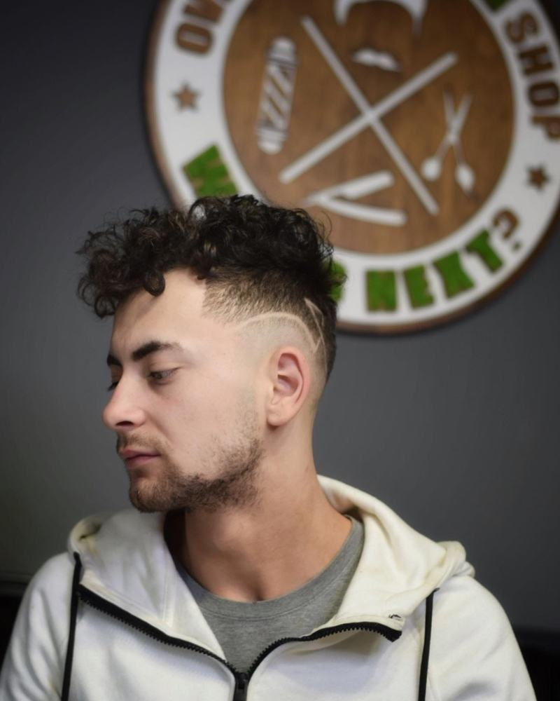
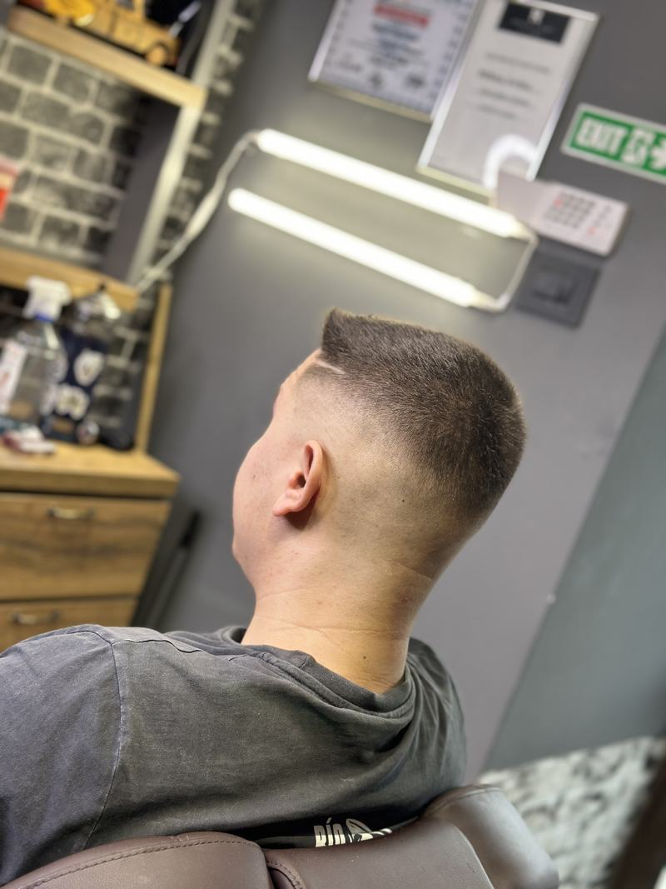
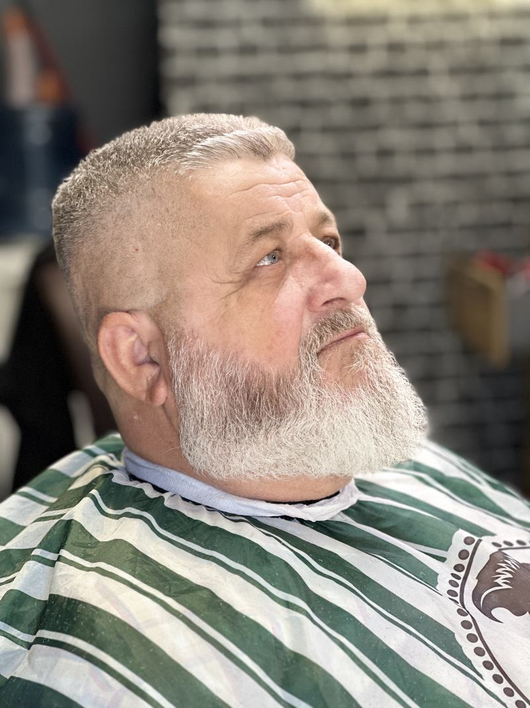
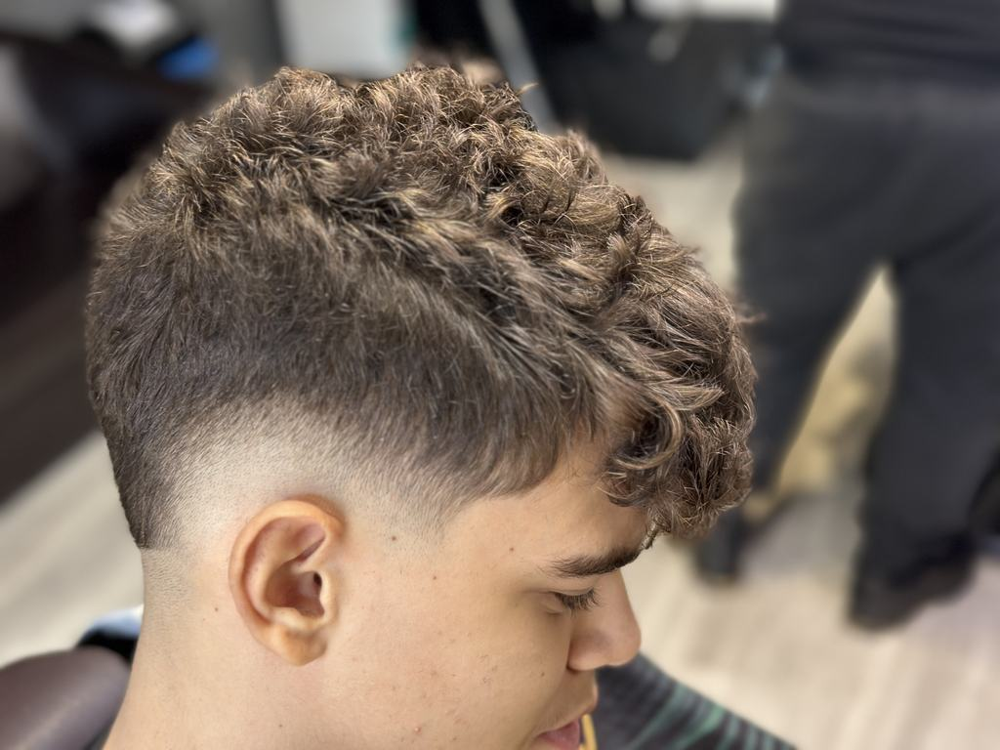
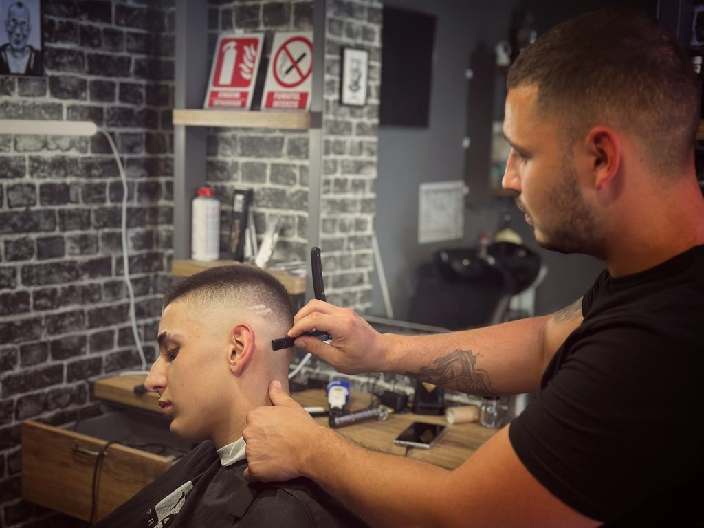
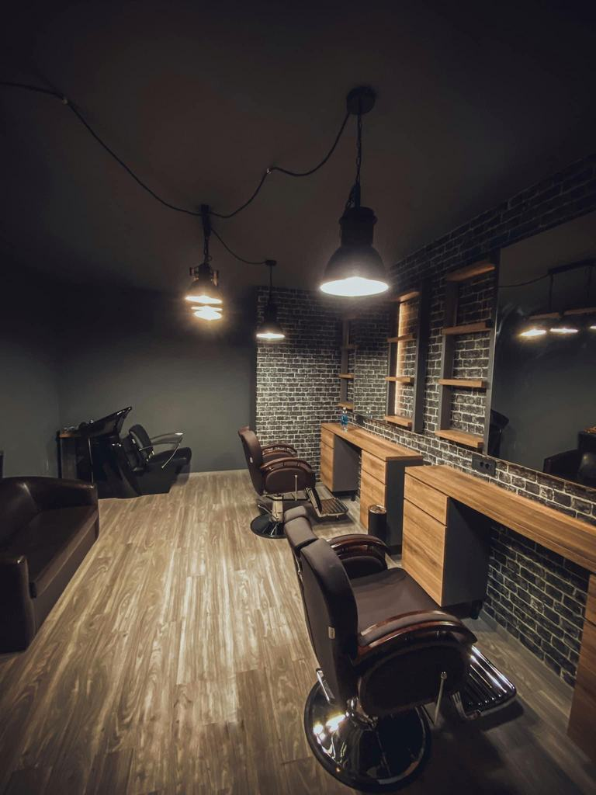

6.018 recenzii pe MERO, media 5,00
„Maxim 5 minute este timpul de asteptare de când intrii pe ușă pana ajungi pe scaunul frizerului”
Clienții scriu, în recenzii, despre aceleași lucruri: atenția la detalii, atmosfera din salon și cafeaua.
Prețuri
Prețurile diferă în funcție de frizer. Cafeaua este din partea casei.
În lei, conform paginii MERO, 03.11.2026.
| Serviciu | Petrică și Dragan | Mihai |
|---|---|---|
| Tuns | 80 | 50 |
| Tuns + barbă | 100–110 | 70–80 |
| Pachet complet | 120 | |
| Barbă | 30 | |
| Masaj capilar | 10 | |
Lucrări din salon





Atmosfera din salon
Pereți grafit, cărămidă gri, lemn de stejar și o lumină joasă, caldă.

„Atmosfera din salon este relaxantă și te simți respectat ca și client.”
„Locatia discreta imbina armonios decorul cu lumina” … „intr-un “man cave””
„chill si primitor...mai departe vedeti voi...iar cafeaua e prea buna!!!”
Ce spun clienții
„Fără niciun dubiu cel mai bun din tot orașul. Serviciu rapid, plăcut, ieftin”
„Am arătat o poza si asa m-a tuns. Super profesionalism.”
„Peste 150 de tunsori pana în prezent, nici o greșeală pana acum.”
„fiul meu este super incantat de noul lui look facut de Ovidiu”
„Nu are aplicatia stele cate merita tunsul la acest BarberShop!!”
„O atmosfera placuta cu preturi avantajoase.”
Program și adresă
| Luni | 8:30–18:30 |
|---|---|
| Marți | 8:30–18:30 |
| Miercuri | 8:30–16:40 |
| Joi | 8:30–18:30 |
| Vineri | 8:30–18:45 |
| Sâmbătă | 7:45–18:00 |
| Duminică | Închis |
Program conform MERO, 03.11.2026.